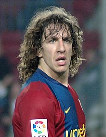

Puyol

Nombre completo
Carles Puyol Saforcada
Nacimiento y Edad
13 de Abril de 1978, 45 años
Altura
1,78m
Posición
Defensa
Seleción Nacional
España
Trayectoria
F.C Barcelona B (1997-99)
F.C Barcelona (1999-14)